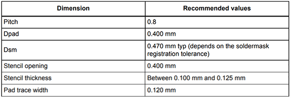
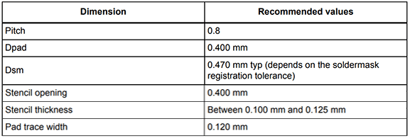
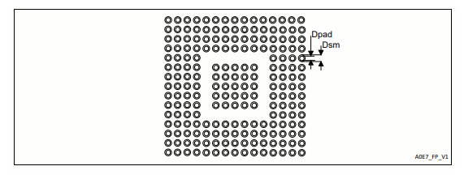
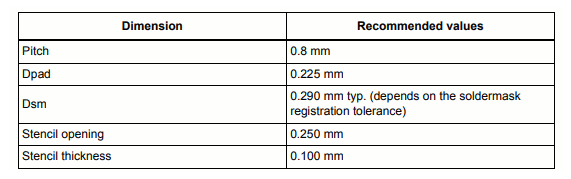

SITCore System on Chip

Overview
The SITCore SoCs provide a low cost way to add .NET computing power to any embedded product. Available as either a 48 pin QFN, a 100 pin LQFP or a 265 ball BGA, the SITCore SoCs let you design IoT products that are secure, easily integrated with the cloud, and can be easily manage and updated from the cloud for deployments of one to a million or more.
SC20xxx Features
- Low power modes including three independently controllable power domains
- RTC
- Watchdog
- Threading
- TCP/IP with SSL
- Full .NET socket interface
- Ethernet
- PPP
- Graphics
- Images
- Fonts
- Controls
- File System
- Full .NET file interface
- SD cards
- USB drives
- Native extensions
- Runtime Loadable Procedures
- Device register access
- Signal controls
- Generation
- Capture
- Pulse measurement
SC13xxx Features
All core OS features, like threading and memory management, are fully supported. Security is still an important part of the offer, with secure assemblies and secure storage. A subset of the crypto libraries is also included. All pin level features are supported, like PWM, ADC and the Signal Generators. SPI, UART, CAN, and I2C are also supported. Full USB Client support, with WebUSB and WinUSB.
There are some missing features that are not typically needed on micro-sized devices, but you still have options.
Graphics: No native support but BasicGraphics library provides an alternative. In fact, the development board includes a color TFT SPI display.
File System: No native file system support but ManagedFileSystem library is a full FAT implementation that supports file/directory access on SD cards over SPI bus.
Networking: SC20 is still the proper way to access networks securely. However, Wiznet W5500 Ethernet chipset and ESP32 WiFi module can be used as an alternative.
Specifications
| Spec | SC13048Q | SC20100S/B | SC20260B |
|---|---|---|---|
| Core | ARM Cortex-M4 32 bit | ARM Cortex-M7 32 bit | ARM Cortex-M7 32 bit |
| Speed | 80 MHz | 480 MHz | 480 MHz |
| Math Co-processor | Single-precision | Double-precision | Double-precision |
| Internal RAM | 160K | 1 MByte | 1 MByte |
| User RAM | 128K | 512K | 512K + 32MB optional external |
| Internal Flash | 512K | 2 MByte | 2 MByte |
| User Flash | 220K + 8MB optional external | 640K + 8MB optional external | 640K + 8MB optional external |
| Instruction Cache | None | 16 KByte | 16 KByte |
| Data Cache | None | 16 KByte | 16 KByte |
| Package | 48-QFN 7 x 7 mm | S/ LQFP100 14 x 14 mm | 265-TFBGA 14 x 14 mm |
| B/ 100-TFBGA 8 x 8 mm | |||
| Temperature Range | -40C to +85C | -40C to +85C | -40C to +85C |
Note
Resources are shared between your application and the operating system.*
Peripherals
| Peripheral | SC13048Q | SC20100S/B | SC20260B |
|---|---|---|---|
| GPIO | 37 | 74 | 163 |
| SPI | 2 | 3 | 3 |
| I2C | 2 | 2 | 3 |
| UART | 4 (2 with handshaking) | 8 (4 with handshaking) | 8 (4 with handshaking) |
| CAN | 1 | 2 | 2 |
| PWM | 10 | 16 | 29 |
| ADC | 10 | 12 | 21 |
| DAC | 1 | 2 | 2 |
| SD/SDIP/MMC | 0 | 1 | 1 |
| Quad SPI | 1 | 1 | 1 |
| USB Host | 0 | 1 | 1 |
| USB Client | 1 | 1 | 1 |
| Ethernet | 0 | 1 | 1 |
| LCD TFT | 0 | 0 | 1 |
| Graphics | BasicGraphics via SPI | Full Graphics via SPI | 16BPP TFT |
| Camera | 0 | 0 | 1 |
Note
As many pins share peripherals, not all peripherals will be available.*
SC20xxx Power Consumption
| 480MHz | 240MHz | |
|---|---|---|
| Running | 205mA | 110mA |
| Idle | 170mA | 97mA |
| Sleep | 6.5mA | 6.5mA |
| Shutdown | 40uA | 40uA |
SC13xxx Power Consumption
| 80MHz | 40MHz | |
|---|---|---|
| Running | 12.6mA | 7.5mA |
| Idle | 6.2mA | 4.2mA |
| Sleep | 1.4mA | 1.4mA |
| Shutdown | 23uA | 23uA |
See the Power Management tutorial
Operational Voltage Levels
| Voltage Range | |
|---|---|
| SC13xxx | 1.71V ~ 3.6V |
| SC20xxx | 1.62V ~ 3.6V |
Note
Keep in mind that modules (SOM) may have other components that needs higher voltage, like QSPI and SDRAM. Those need to be accounted for.
Using Interrupts (IRQs)
The microcontrollers we use in our SITCore line of products do not support concurrent interrupts with the same pin number, even if the pins are on different ports (the port is denoted by the second letter of the GPIO pin name -- PA1 is pin 1 on port A). Therefore, interrupts are available on only 16 pins at any given time. For example, pins PA1 and PB1 cannot be used as interrupt pins at the same time, but PA1 and PB2 can. PA1 and PA2 can also be used with interrupts simultaneously.
Pinouts
GPIO pins are rated is 20mA per pin, 140mA total on all pins, and 5 volt tolerant.
SC13048Q Pinout

SC20100S/B Pinout
SC20260B Pinout
Device Startup
The SITCore is held in reset while the RESET pin is low. Releasing RESET will begin the system startup process.
There are three different components of the device firmware:
- GHI Electronics Bootloader: initializes the system, updates TinyCLR when needed, and executes TinyCLR.
- TinyCLR: used to load, debug, and execute the managed application.
- Managed application: the program developed by you or your software developer.
Which components get executed on startup is controlled by manipulating the LDR pin. It is pulled high on startup during normal program execution. When low, the device waits in the GHI Electronics Bootloader. Otherwise, the managed application is executed. The APP pin is used to stop the managed application from running.
Additionally, the communications interface between the host PC and the SITCore is selected on startup through the MOD pin, which is pulled high on startup. The USB interface is selected when MOD is high and UART1 is selected when MOD is low.
The above discussed functions of the LDR, APP, and MOD pins are only available during startup. After startup, the pins return to the default GPIO state and are available as a GPIO (or peripheral pin) in your application. Check out the Special Pins page for more information.
TinyCLR OS
TinyCLR OS provides a way to program the SITCore in C# from the Microsoft Visual Studio integrated development environment. To get started you must first install the firmware on the SITCore (instructions below) and then go to the TinyCLR Getting Started page for instructions.
Loading the Firmware
- Activate the bootloader, hold the LDR signal low while resetting the board.
- Open TinyCLR Config tool.
- Select the correct COM port and 'Connect' to the device. If you are not seeing it then the device is not in the loader mode.
- Download the firmware. Select the downloaded firmware in TinyCLR Config and click 'Update Firmware'.
You can also update the firmware manually. Download the firmware and learn how to use the GHI Electronics Bootloader manually
Start Coding
Now that you have installed the bootloader and firmware on the SITCore, you can setup your host computer and start programming. Go to the TinyCLR Getting Started page for instructions.
Design Considerations
Footprints
This is the recommended footprint for the SC13048Q:

This is the recommended footprint for the SC20100S:

This is the recommended footprint for the SC20100B:
 

This is the recommended footprint and PCB design rules for the SC20260B:
 
Required Pins
Exposing the following pins is required in every design to enable device programming, updates, and recovery:
- RESET
- LDR
- APP
- MOD (required to select a the debug interface)
- Desired debug interface(s) (see below)
For information on these and other important pins, please refer to the Special Pins page.
Debug Interface
All SITCore products provide two debug and deployment interfaces: USB and serial. Whether USB or serial debugging is selected is determined by the state of the MOD pin during startup and reset. If the MOD pin is held high during startup, the USB debug interface will be selected. If the MOD pin is held low during startup, the serial debug interface will be selected.
When in serial mode, all SITCore products use UART1 except SC20260B chipset/boards use UART5.
Power Supply
A clean power source, suitable for digital circuitry, is needed to power SITCore SoCs. Voltages should be regulated to within 10% or better of the specified voltage. Decoupling capacitors of 0.1 uF are needed near every power pin. Additionally, a large capacitor, typically 47 uF, should be placed near the SoC if the power supply is more than few inches away.
Analog Considerations
It is a good idea to provide a separate filtered supply line for the Vdda, and Vref+ pins. Additionally, on the 260 pin devices, you may want to provide a separate filtered ground connection for the Vssa and Vref- pins. While this is not needed for ADC operation, it does help to ensure more accurate ADC readings by reducing analog supply noise.
Crystals
There is a lot to consider when selecting a crystal -- especially the RTC crystal. Please consult AN2867 from STMicroelectronics.
Main Crystal
Most 8 MHz quartz crystals and ceramic resonators from various manufacturer will work with SITCore SoCs. The table below will tell you what to look for based on the crystal's maximum equivalent series resistance (ESR), shunt capacitance (C0), and load capacitance (CL). Keeping the total capacitance of C0 + CL well below the recommended maximum will provide more of a safety margin for stable and reliable oscillator operation.
The SITCore SC13048 SoC main clock can also operate using an internal oscillators, with no need for any crystals, even when using USB. If an application requires better accuracy, like when running CAN for example, an external oscillator can be added.
| Max crystal ESR (ohms) | Recommended max total of C0 and CL (pF) |
| 40 | 49 |
| 50 | 44 |
| 60 | 40 |
| 70 | 37 |
| 80 | 35 |
| 100 | 31 |
| 200 | 22 |
| 300 | 18 |
RTC Crystal
It can be difficult to select the right RTC crystals, that is due to the RTC oscillator running on an extremely low power. The table below should help. For reliable operation, the total capacitance of C0 (crystal shunt capacitance) and CL (crystal load capacitance) must be less than the recommended max total of C0 and CL.
The SITCore SC13048 SoC built in RTC can also operate using an internal oscillator when a 32.768Khz crystals is not present, however adding an external crystal gives better RTC accuracy.
| Max crystal ESR (kilohms) | Recommended max total of C0 and CL (pF) |
| 30 | 9.9 |
| 40 | 8.5 |
| 50 | 7.6 |
| 60 | 7.0 |
| 70 | 6.5 |
| 80 | 6.0 |
| 90 | 5.7 |
| 100 | 5.4 |
When laying out your board, it is best to keep the crystal as close as possible to the SoC. The oscillator circuit should also be surrounded by a grounded guard ring or ground plane on the same layer to reduce noise.
RTC Power
The VBAT pin is optionally used to power up the RTC when the system main power is turned off. Also, SITCore chipsets and modules include a built in charging circuit internally, that can be enabled to charge an external supercap. See the RTC tutorial for further details.
QuadSPI External Flash
SITCore supports 16 MByte external QuadSPI flash chips. The options are in the table below.
| Manufacture | Part Number |
|---|---|
| Winbond Electronics | W25Q128JVSIM |
| Winbond Electronics | W25Q128JVSIQ |
Reset
SITCore processors have a permanent internal pull up resistor that is connected to the RESET (NRST) pin. No external pull up resistor is needed.
Oven Reflow Profile
SITCore SoCs are not sealed for moisture. Baking SoCs before reflow is recommended and required in a humid environment. The process of reflow can damage the SoC if the temperature is too high or exposure is too long.
The lead-free reflow profiles used by GHI Electronics are shown below. The profiles are based on AIM SAC 305 solder (3% silver, 0.5% copper). The thermal mass of the assembled board and the sensitivity of the components on it affect the total dwell time. Differences in the two profiles are where they reach their respective peak temperatures as well as the time above liquids (TAL). The shorter profile applies to smaller assemblies, whereas the longer profile applies to larger assemblies such as back-planes or high-density boards. The process window is described by the shaded area. These profiles are only starting-points and general guidance. The particulars of the oven and the assembly will determine the final process.
SITCore Dev Boards
The SITCore development boards are ready to get any project started as quickly and easily as possible. Click here for details.